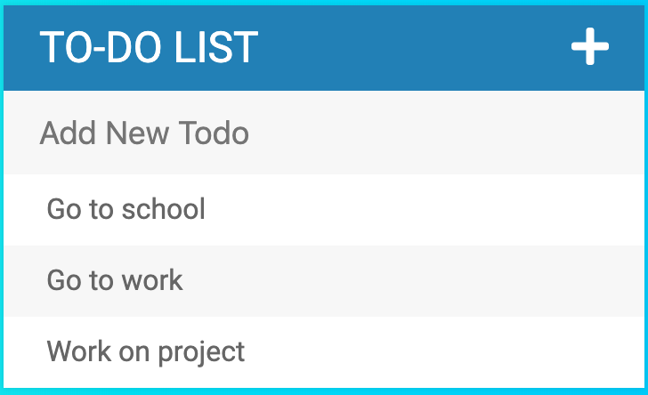
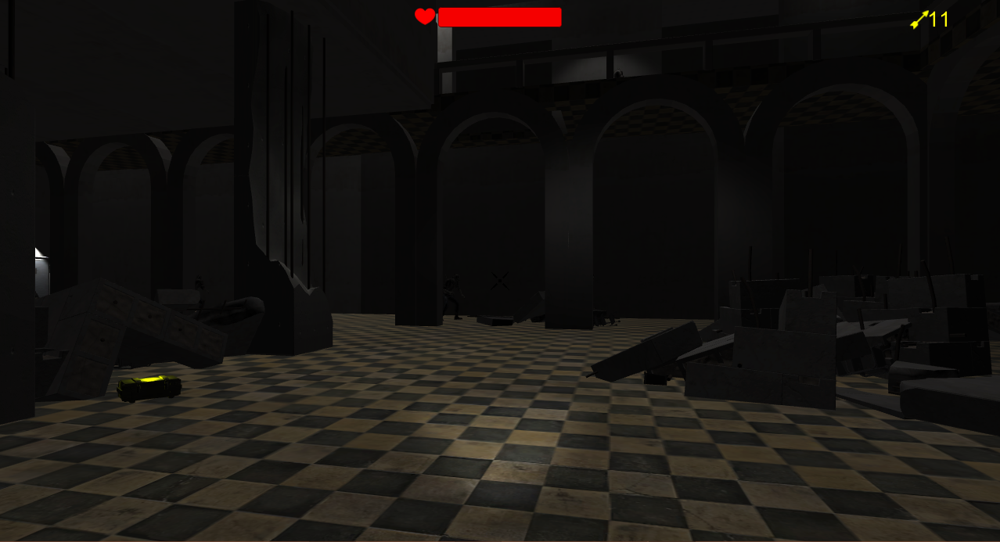

This is one of my favorite projects from the Web Development Bootcamp course on Udemy. In this Todo
list project, I learned more about front end web development using HTML, CSS, and DOM manipulation using
jQuery. DOM manipulation such as element selection can be made easier with jQuery over vanilla Javascript,
and comes with built in functions that can reduce the amount of code needed. For example, the toggle function came
in handy for manipulating an elements CSS when clicked. Other functions that were useful were event listeners such as
.on() and the more specific .keyPressed() and .click() event listeners. On top of this I made use of icons from Font
Awesome.


This was a solo project developed in my Level Design class at the University of Texas at Austin. Using the theme of Horror/survival,
I created the prototype game, "Silent Night". In this game you start off in an abandoned building filled with blind undead
creatures and you must find the way out. Moving expands their awareness of you and running expands it even more. You are equipped with
only a bow and ammo is scarce. This game was developed in the Unity game engine and programmed in C# with visual studio. This
game has pulled over 100 views and about 36 and counting downloads on itch.io
Since 7th grade, game development was my passion - mainly the coding portion. I loved
creating game mechanics and I was the master of the worlds I created. Then, I attended
the University of Texas at Austin with the hopes of getting into their Arts and Entertainment
Technology major program because of its focus in game development. My first time applying to the major
ended in rejection. However I did not let that stop me and I applied again the year after and I
managed to get accepted during one of their most competitive years for selection at that point.
However, as I took more classes on computer science fundamentals, computer programming, web design and
interaction, and taking web development courses on Udemy my interests shifted to web/software development.
With my prior knowledge of game programming, I realised that my skills could transfer to web development as
well. Unfortunately I was unable to transfer into UT's Computer Science Program, however I will not
let this stop me from pursuing web/software development as a career. Programming for games has been a blast
and I will never stop doing it, but my main focus now is creating more practical applications that I can apply
to real world problems and situations. Creating my own website has been one of the most enjoyable projects I
have done - comparable to participating in the 2019 Diversity Hackathon. I do not regret making this transition
to web/software development and I hope to learn more about it each day I pursue this career.